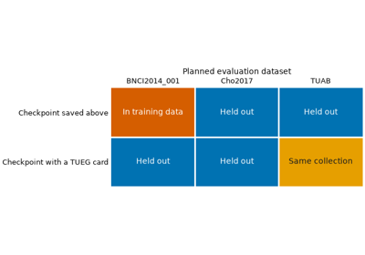

braindecode.models.Labram#
- class braindecode.models.Labram(n_times=None, n_outputs=None, chs_info=None, n_chans=None, sfreq=None, input_window_seconds=None, patch_size=200, learned_patcher=False, embed_dim=200, conv_in_channels=1, conv_out_channels=8, num_layers=12, num_heads=10, mlp_ratio=4.0, qkv_bias=False, qk_norm=<class 'torch.nn.modules.normalization.LayerNorm'>, qk_scale=None, drop_prob=0.0, attn_drop_prob=0.0, drop_path_prob=0.0, norm_layer=<class 'torch.nn.modules.normalization.LayerNorm'>, init_values=0.1, use_abs_pos_emb=True, use_mean_pooling=True, init_scale=0.001, neural_tokenizer=True, attn_head_dim=None, activation=<class 'torch.nn.modules.activation.GELU'>, on_non_divisible='pad', channel_strategy='native', channel_strategy_kwargs=None)[source]#
Labram from Jiang, W B et al (2024) [Jiang2024].
Convolution Foundation Model

Large Brain Model for Learning Generic Representations with Tremendous EEG Data in BCI from [Jiang2024].
This is an adaptation of the code [Code2024] from the Labram model.
The model is transformer architecture with strong inspiration from BEiTv2 [BeiTv2].
The models can be used in two modes:
Neural Tokenizer: Design to get an embedding layers (e.g. classification).
Neural Decoder: To extract the ampliture and phase outputs with a VQSNP.
The braindecode’s modification is to allow the model to be used in with an input shape of (batch, n_chans, n_times), if neural tokenizer equals True. The original implementation uses (batch, n_chans, n_patches, patch_size) as input with static segmentation of the input data.
The models have the following sequence of steps:
if neural tokenizer: - SegmentPatch: Segment the input data in patches; - TemporalConv: Apply a temporal convolution to the segmented data; - Residual adding cls, temporal and position embeddings (optional); - WindowsAttentionBlock: Apply a windows attention block to the data; - LayerNorm: Apply layer normalization to the data; - Linear: An head linear layer to transformer the data into classes. else: - PatchEmbed: Apply a patch embedding to the input data; - Residual adding cls, temporal and position embeddings (optional); - WindowsAttentionBlock: Apply a windows attention block to the data; - LayerNorm: Apply layer normalization to the data; - Linear: An head linear layer to transformer the data into classes.
Important
Pre-trained Weights Available
This model has pre-trained weights available on the Hugging Face Hub. You can load them using:
from braindecode.models import Labram # Load pre-trained model from Hugging Face Hub model = Labram.from_pretrained("braindecode/labram-pretrained")
To push your own trained model to the Hub:
# After training your model model.push_to_hub( repo_id="username/my-labram-model", commit_message="Upload trained Labram model" )
Requires installing
braindecode[hub]for Hub integration.Added in version 0.9.
- Parameters:
n_times (int) – Number of time samples of the input window.
n_outputs (int) – Number of outputs of the model. This is the number of classes in the case of classification.
chs_info (list of dict) – Information about each individual EEG channel. This should be filled with
info["chs"]. Refer tomne.Infofor more details.n_chans (int) – Number of EEG channels.
sfreq (float) – Sampling frequency of the EEG recordings.
input_window_seconds (float) – Length of the input window in seconds.
patch_size (int) – The size of the patch to be used in the patch embedding.
learned_patcher (bool) – Whether to use a learned patch embedding (via a convolutional layer) or a fixed patch embedding (via rearrangement).
embed_dim (int) – The dimension of the embedding. In the Neural Tokenizer mode, it is set by the temporal convolution (
conv_out_channelsandpatch_size), with a warning if the given value differs.conv_in_channels (int) – The number of convolutional input channels.
conv_out_channels (int) – The number of convolutional output channels.
num_layers (int (default=12)) – The number of attention layers of the model.
num_heads (int (default=10)) – The number of attention heads.
mlp_ratio (float (default=4.0)) – The expansion ratio of the mlp layer
qkv_bias (bool (default=False)) – If True, add a learnable bias to the query, key, and value tensors.
qk_norm (
type[Module]) – If not None, apply LayerNorm to the query and key tensors. Default is nn.LayerNorm for better weight transfer from original LaBraM. Set to None to disable Q,K normalization.qk_scale (float (default=None)) – If not None, use this value as the scale factor. If None, use head_dim**-0.5, where head_dim = dim // num_heads.
drop_prob (float (default=0.0)) – Dropout rate for the attention weights.
attn_drop_prob (float (default=0.0)) – Dropout rate for the attention weights.
drop_path_prob (float (default=0.0)) – Dropout rate for the attention weights used on DropPath.
norm_layer (
type[Module]) – The normalization layer to be used.init_values (float (default=0.1)) – If not None, use this value to initialize the gamma_1 and gamma_2 parameters for residual scaling. Default is 0.1 for better weight transfer from original LaBraM. Set to None to disable.
use_abs_pos_emb (bool (default=True)) – If True, use absolute position embedding.
use_mean_pooling (bool (default=True)) – If True, the readout is
fc_normapplied to the mean of the patch tokens, as in the original fine-tuning. If False, the readout is the [CLS] token after the finalnorm; the original pretraining loss never uses the [CLS] output. A pretraining checkpoint (withnormand withoutfc_normor head, such as the released weights) loads into a mean-pooling model as in the original fine-tuning script:normis unused andfc_normkeeps its initialization.init_scale (float (default=0.001)) – The initial scale to be used in the parameters of the model.
neural_tokenizer (bool (default=True)) – The model can be used in two modes: Neural Tokenizer or Neural Decoder.
attn_head_dim (bool (default=None)) – The head dimension to be used in the attention layer, to be used only during pre-training.
activation (
type[Module]) – Activation function class to apply. Should be a PyTorch activation module class likenn.ReLUornn.ELU. Default isnn.GELU.on_non_divisible ({"pad", "crop", "error"}, default="pad") – How
PatchTokenizertreats a time axis that is not a multiple ofpatch_size: right-pad with zeros (default), crop the trailing samples, or raise.channel_strategy (
str) – How any montage reaches the backbone (pretrained models only; see Channel strategies)."native"keeps the model as it is."exact","zero","nearest","idw","spline","field","source","region","wiener"(callmodel.channel_layer.fitfirst) or"latent"map the montage ofchs_info(or of thechs_infogiven toforward) onto the backbone’s channels with aChannelLayer. Saved in the config.model(x)andmodel.forward(x)both apply the layer.channel_strategy_kwargs (
dict|None) – Options of the strategy (e.g.{"reg": 1e-2}for"spline").
- Raises:
ValueError – If some input signal-related parameters are not specified: and can not be inferred.
Notes
If some input signal-related parameters are not specified, there will be an attempt to infer them from the other parameters.
Examples
Load pre-trained weights:
>>> import torch >>> from braindecode.models import Labram >>> model = Labram(n_times=1600, n_chans=64, n_outputs=4) >>> url = "https://huggingface.co/braindecode/Labram-Braindecode/blob/main/braindecode_labram_base.pt" >>> state = torch.hub.load_state_dict_from_url(url, progress=True) >>> model.load_state_dict(state)
References
[Jiang2024] (1,2)Wei-Bang Jiang, Li-Ming Zhao, Bao-Liang Lu. 2024, May. Large Brain Model for Learning Generic Representations with Tremendous EEG Data in BCI. The Twelfth International Conference on Learning Representations, ICLR.
[Code2024]Wei-Bang Jiang, Li-Ming Zhao, Bao-Liang Lu. 2024. Labram Large Brain Model for Learning Generic Representations with Tremendous EEG Data in BCI. GitHub 935963004/LaBraM (accessed 2024-03-02)
[BeiTv2]Zhiliang Peng, Li Dong, Hangbo Bao, Qixiang Ye, Furu Wei. 2024. BEiT v2: Masked Image Modeling with Vector-Quantized Visual Tokenizers. arXiv:2208.06366 [cs.CV]
Hugging Face Hub integration
When the optional
huggingface_hubpackage is installed, all models automatically gain the ability to be pushed to and loaded from the Hugging Face Hub. Install with:pip install braindecode[hub]
Pushing a model to the Hub:
from braindecode.models import Labram # Train your model model = Labram(n_chans=22, n_outputs=4, n_times=1000) # ... training code ... # Push to the Hub; ``datasets`` and ``base_model`` go to the card model.push_to_hub( repo_id="username/my-labram-model", commit_message="Initial model upload", model_card_kwargs={"datasets": ["BNCI2014_001"]}, )
Loading a model from the Hub:
from braindecode.models import Labram # Load pretrained model model = Labram.from_pretrained("username/my-labram-model") # Data the weights were trained on, from the Hub model card print(model.card_data.datasets if model.card_data else None) # Load with a different number of outputs (head is rebuilt automatically) model = Labram.from_pretrained("username/my-labram-model", n_outputs=4)
Extracting features and replacing the head:
import torch x = torch.randn(1, model.n_chans, model.n_times) # Extract encoder features (consistent dict across all models) out = model(x, return_features=True) features = out["features"] # Replace the classification head model.reset_head(n_outputs=10)
Saving and restoring full configuration:
import json config = model.get_config() # all __init__ params with open("config.json", "w") as f: json.dump(config, f) model2 = Labram.from_config(config) # reconstruct (no weights)
All model parameters (both EEG-specific and model-specific such as dropout rates, activation functions, number of filters) are automatically saved to the Hub and restored when loading.
See Loading and Adapting Pretrained Foundation Models for a complete tutorial.
Methods
- fix_init_weight_and_init_embedding()[source]#
Fix the initial weight and the initial embedding. Initializing with truncated normal distribution.
- forward(x, return_patch_tokens=False, return_all_tokens=False, return_features=False, ch_names=None, ch_mask=None)[source]#
Forward the input EEG data through the model.
- Parameters:
x (
Tensor) – The input data with shape (batch, n_chans, n_times) or (batch, n_chans, n_patches, patch size).return_patch_tokens (
bool) – Return the patch tokensreturn_all_tokens (
bool) – Return all the tokensreturn_features (
bool) – If True, return a dict with"features"(patch tokens),"cls_token"and"tokens", the patch tokens as(batch, n_chans, n_patches, embed_dim)(one row in decoder mode), instead of the classification output. Token outputs are zero for padded channels.ch_names (
Optional[List[str]]) – Channel names matching the channel axis ofx. Matched case-insensitively againstLABRAM_CHANNEL_ORDERto select the corresponding position embeddings, so callers can forward an arbitrary subset of canonical channels. IfNone(default),xmust already be inLABRAM_CHANNEL_ORDERwith exactlylen(LABRAM_CHANNEL_ORDER)channels; otherwise aValueErroris raised. Only honored whenneural_tokenizer=True; in decoder mode the position embedding is sequential andch_nameshas no effect.ch_mask (
Optional[Tensor]) –(batch, n_chans)mask of real channels, seecheck_ch_mask(). Padded channels affect no pooled output. Needsneural_tokenizer=True.
- Returns:
The output of the model with dimensions (batch, n_outputs)
- Return type:
- forward_features(x, input_chans, return_patch_tokens=False, return_all_tokens=False, ch_mask=None)[source]#
Forward the features of the model.
- Parameters:
x (torch.Tensor) – The input data with shape (batch, n_chans, n_times).
input_chans (torch.Tensor) – Indices for selecting position embeddings (including the [CLS] token).
return_patch_tokens (
bool) – Whether to return the patch tokens.return_all_tokens (
bool) – Whether to return all the tokens.ch_mask (
Optional[Tensor]) –(batch, n_chans)boolean mask of real channels, already checked.
- Returns:
x – The output of the model.
- Return type:
- get_classifier()[source]#
Get the classifier of the model.
- Returns:
The classifier of the head model.
- Return type:
- reset_classifier(n_outputs)[source]#
Reset the classifier with the new number of classes.
- Parameters:
n_outputs (int) – The new number of classes.
- reset_head(n_outputs)[source]#
Replace the classification head for a new number of outputs.
This is called automatically by
from_pretrained()when the user passes ann_outputsthat differs from the saved config. Override in subclasses that need a model-specific head structure. Implementations keep changed constructor arguments in sync withself._update_init_kwargs, so that a saved model can be loaded back. Implementations requiring positive outputs can also useself._set_n_outputsto validate and record the new value.- Parameters:
n_outputs (int) – New number of output classes.
Examples
>>> from braindecode.models import BENDR >>> model = BENDR(n_chans=22, n_times=1000, n_outputs=4) >>> model.reset_head(10) >>> model.n_outputs 10
Added in version 1.4.
Examples using braindecode.models.Labram#


Which data did a pretrained checkpoint see? Reading the model card